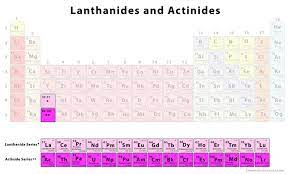

LANTHANIDES AND ACTINIDES

Lanthanides
Lanthanides are the rare earth elements of the modern periodic table . They are a series of chemical elements comprises the 15 metallic chemical elements with atomic number 57-71 from Lanthanum through lutenium .
The Lanthanides:
Lanthanum 57 "La"
Cerium 58 "Ce"
Praseodymium 59 "Pr"
Neodymium 60 "Nd"
Promethium 61 "Pm"
Samarium 62 "Sm"
Europium 63 "Eu"
Gadolinium 64 "Gd"
Terbium 65 "Tb"
Dysprosium 66 "Dy"
Holmium 67 "Ho"
Erbium 68 "Er"
Thulium 69 "Tm"
Ytterbium 70 "Yb"
Lutetium 71 "Lu"
Lanthanides properties:
1. soft metals and can even be cut with a knife.
2. The elements have different reaction tendencies depending on basicity. Some are very reactive while some take time to react.
3. Lanthanides can corrode or become brittle if they are contaminated with other metals or non-metals.
4. They all mostly form a trivalent compound. Sometimes they can also form divalent or tetravalent compounds.
5. They are magnetic.
6. Moving from left to right across the period (increasing atomic number), the radius of each lanthanide 3+ ion steadily decreases. This is referred to as 'lanthanide contraction'.
7. High melting points and boiling points.
8. They are very active.
9. React with water to liberate hydrogen (H2), slowly in cold/quickly upon heating.
10. Lanthanides commonly bind to water.
11. React with H+ (dilute acid) to release H2 (rapidly at room temperature).
12. React in an exothermic reaction with H2.
13. Burn easily in air.
14. They are strong reducing agents.
15. Their compounds are generally ionic.
16. At elevated temperatures, many rare earths ignite and burn vigorously.
17. Most rare earth compounds are strongly paramagnetic.
18. Many rare earth compounds fluoresce strongly under ultraviolet light.
19. Lanthanide ions tend to be pale colors, resulting from weak, narrow, forbidden f x f optical transitions.
20. The magnetic moments of the lanthanide and iron ions oppose each other.
21. The lanthanides react readily with most nonmetals and form binaries on heating with most nonmetals.
22. The coordination numbers of lanthanides are high (greater than 6; usually 8 or 9 or as high as 12).
23. They have metallic luster.
Uses of lanthanides:
1. They are used as a catalyst in the manufacture of petroleum and synthetic products.
2. Ceria is used in lamps, magnets, lasers, motion picture projectors, and x-ray intensify screens.
3. Alloys of lanthanides are used in the instrumental steels, stainless steel , and heat resistance .
4. It is used for the metallothermic reaction.
5. Ceria salts are used in lead storage battaries.
Actinides:
They are a series encompasses the 15 metallic chemical elements with atomic numbers from 89-103 from Actinium through Lawrenthium .
The Actinides :
Actinium 89 "Ac"
Thorium 90 "Th"
Protactinium 91 "Pa"
Uranium 92 "U"
Neptunium 93 "Np"
Plutonium 94 "Pu"
Americium 95 "Am"
Curium 96 "Cm"
Berkelium 97 "Bk"
Californium 98 "Cf"
Einsteinium 99 "Es"
Fermium 100 "Fm"
Mendelevium 101 "Md"
Nobelium 102 "No"
Lawrencium 103 "Lr"
Actinides properties:
1. All actinides share similar physical appearance; they are solids that emit a silver luster.
2. All actinides possess high densities, except for americium and thorium.
3. Actinides are electropositive elements; they tend to lose electrons to form positively charged species. This explains why their oxidation state is positive, +3.
4. Actinides are known to be soft and ductile solids that can be easily sliced with a knife.
5. Actinides are weakly attracted to external magnetic fields due to their nature in being paramagnetic.
6. These elements readily react with nonmetals.
7. They are radioactive elements.
8. All are radioactive. These elements have no stable isotopes.
9. Actinides are highly electropositive.
10. The metals tarnish readily in air. These elements are pyrophoric (spontaneously ignite in the air), particularly as finely divided powders.
11. Actinides are very dense metals with distinctive structures. Numerous allotropes can be formed—plutonium has at least six allotropes. The exception is actinium, which has fewer crystalline phases.
12. They react with boiling water or dilute acid to release hydrogen gas.
13. Actinide metals tend to be fairly soft. Some can be cut with a knife.
14. These elements are malleable and ductile.
15. All the actinides are paramagnetic.
16. All these elements are silver-colored metals that are solid at room temperature and pressure.
17. Actinides combine directly with most nonmetals.
18. The actinides successively fill the 5f sublevel. Many actinide metals have properties of both d block and f block elements.
19. Actinides display several valence states, typically more than the lanthanides. Most are prone to hybridization.
20. The actinides (An) may be prepared by reduction of AnF3 or AnF4 with vapors of Li, Mg, Ca, or Ba at 1100-1400 C.
Uses of actinides:
1.They are used as energy sources in cardiac pacemakers .
2.They are also used in generation of electrical energy for instrumentation on the moon .
3.Uranium and Plutonium have been used for generation of nuclear energy.
4.Americium and other actinides are utilized in smoke detectors.
5.Thorium is mostly employed in gas mantles.
6.Actinium is used by scientists and researchers to conduct scientific research or study.
7.Actinium is also employed as a gamma source, an indicator, and a neutron source.
8.A significant number of actinides are used in defense activities, nuclear weapons, and energy generation.
9.Every actinide is distinguished by its own atomic number as well as its various features and characteristics. It is critical to investigate the chemical and physical features of actinides in order to predict their reactions.
10.The actinides lack stable isotopes.